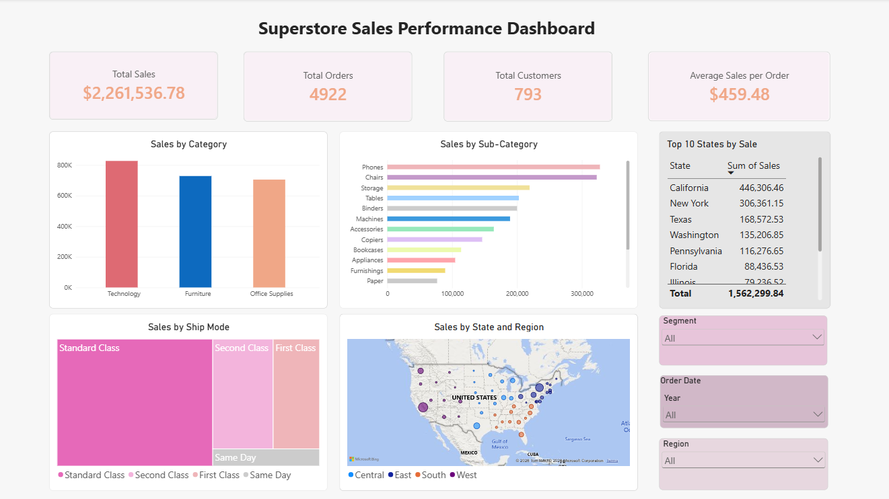

Renalyn N. Pino
Aspiring Data Analyst
Aspiring Data Analyst
Data Analytics Project 01
One dataset, four tools, and a complete workflow from data cleaning to interactive visualization.
Project Overview:Analyzed Superstore sales data to explore sales performance across product categories, sub-categories, states, regions, and shipping modes. This project demonstrates an end-to-end data analysis workflow using four tools.
Tools and Workflow:

Power BI screenshot preview will appear here once powerbi-dashboard.png is added to the project-assets folder.
Objective:To demonstrate practical skills in data cleaning, SQL querying, and dashboard development while presenting sales data in an interactive and accessible format.
Skills Demonstrated:Data Cleaning, Data Validation, Data Manipulation, Data Analysis, Data Visualization, SQL, PostgreSQL, Microsoft Excel, Tableau, and Power BI
Project Files: